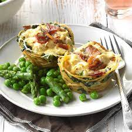
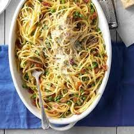

Loaded Chicken Carbonara Cups


Spaghetti cupcakes with a chicken carbonara twist make for a tasty, fun family dinner. Whole wheat pasta
and reduced-fat ingredients make these quick and easy little pasta cakes nutritional winners, too..
Ingredients
- 4 ounces uncooked whole wheat spaghetti
- 1 large egg, lightly beaten
- 5 ounces frozen chopped spinach, thawed and squeezed dry (about 1/2 cup)
- 1/2 cup 2% cottage cheese
- 1/2 cup shredded Parmesan cheese, divided
- 1/4 teaspoon lemon-pepper seasoning
- 6 bacon strips, cooked and crumbled, divided
- 1/2 cup reduced-fat reduced-sodium condensed cream of chicken soup, undiluted
- 1/4 cup reduced-fat spreadable chive and onion cream cheese
- 1 cup chopped cooked chicken breast
- 1/3 cup shredded part-skim mozzarella cheese
- 1/4 cup finely chopped oil-packed sun-dried tomatoes
Procedure
- Preheat oven to 350°. In a large saucepan, cook spaghetti
according to package directions; drain, reserving 1/3 cup pasta water.
- In a large bowl, mix egg, spinach, cottage cheese, 1/4 cup Parmesan cheese, lemon pepper and half the bacon. Add spaghetti; toss to combine. Divide among 12 greased muffin cups.
Using a greased tablespoon, make an indentation in the center of each.
- In a large bowl, whisk together soup, cream cheese and reserved pasta water. Stir in chicken, mozzarella cheese and tomatoes; spoon into cups.
Sprinkle with the remaining bacon and Parmesan cheese.
- Bake until set, about 15 minutes. Cool 5 minutes before removing from pan.
Click To Return